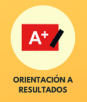
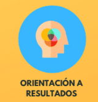
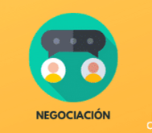
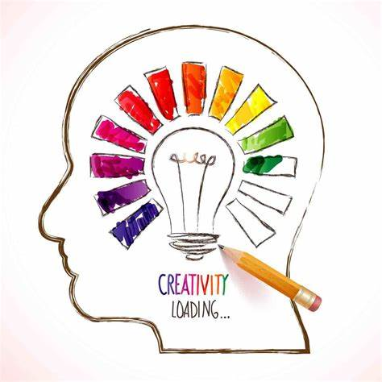

Las habilidades blandas son aquellas asociadas con la personalidad y la naturaleza de la persona, conllevan una serie
de competencias personales que ienen como eje las relaciones interpersonales y el trabajo en equipo
Habilidades blandas mas demandadas por las empresas en la nueva normalidad:
- Inteligencia emocional
Capacidad para identificar y manejar las emociones propias y ajenas con el fin de alcanzar objetivos en común:
- El autoconocimiento personal
- El autocontrol personal
- La automotivación

- Pensamiento critico
La habilidad de cuestionarse la forma en que se hacen las cosas, es clave para la mejora continua y la innovacion
de las organizaciones
Ejemplo: Visualizar de que manera es la mejor para acomodar y ejecutar el codigo

-Habilidades comunicativas y empatia digital
La sensibilidad humana tiene que estar presente en las interacciones digitales, ya sea entre nuestros compañeros de oficina
o con los interesados en conocer los productos o servicios que ofrece la empresa para la que laboramos
Ejemplo: Ser empaticos con los compañeros que no puedan realizar este trabajo en sus computadoras
- Gestión de conflictos / Resolución de problemas complejos o Resolución colaborativa
En las oficinas de hoy, conviven generaciones, culturas y estilos de vida cuyas diferencias pueden originar un enfrentamiento
entre puntos de vistas o formas de hacer las cosas. Ante ello es clave ser conciliador y saber llegar a un termino médio.
Ejemplo: Dar turnos para expresar nuestras ideas

- El liderazgo accountable Liderazgo & Accountability
Personas con un nivel alto de responsabilidad personal que alcanzen objetivos sobresalientes y no dependan de una supervisión
constante para avanzar.
Ejemplo: Asigar al compañero mas capacitado para dirigir al equipo
- Gestión de cambio
Numerosos estudios han demostrado queel cambio esta siempre presente. Las trasformaciones culturales y digitales
traen consigo que el cambio sea una constante que no da tregua en las empresas. Saber lidiar con ello y adaptarse es bien valorado.
Ejemplo: Ir adaptandose a las herramientas que se nos van proporcionando para trabajar
Habilidades Blandas
Ejemplo
Pensamiento Creativo:
Se refiere a la capacidad de generar nuevas ideas, conceptos o soluciones originales y útiles. Implica pensar de manera no convencional, cuestionar suposiciones y buscar alternativas innovadoras.
Ejemplo en el trabajo en equipo: Durante una sesión de lluvia de ideas para un proyecto universitario, los miembros del equipo aplicaron el pensamiento creativo al proponer soluciones fuera de lo común para un desafío específico. Estas ideas innovadoras ayudaron al equipo a explorar nuevas oportunidades y enfoques para el proyecto.

Pensamiento Disruptivo:
Similar al pensamiento creativo, el pensamiento disruptivo implica desafiar el status quo y cuestionar las prácticas establecidas para encontrar nuevas formas de hacer las cosas. Se trata de buscar cambios radicales que puedan transformar un proceso, producto o industria.
Ejemplo en el trabajo en equipo: Durante un proyecto universitario, un equipo aplicó el pensamiento disruptivo al cuestionar las normas de la industria y proponer una solución completamente nueva y revolucionaria para un problema común. Esta mentalidad disruptiva llevó a una innovación significativa en el proyecto.
Manejo del Estrés:
Se refiere a la capacidad de mantener la calma, la claridad mental y el control emocional en situaciones de presión o tensión. Implica identificar y manejar efectivamente los factores estresantes para mantener el rendimiento y el bienestar personal.
Ejemplo en el trabajo en equipo: Durante un período de plazos ajustados y alta carga de trabajo en un proyecto universitario, los miembros del equipo demostraron habilidades de manejo del estrés al mantener la calma y la compostura, trabajar de manera eficiente bajo presión y apoyarse mutuamente para mitigar el estrés.
Enfocado en Servicio al Cliente:
Se refiere a la capacidad de satisfacer las necesidades y expectativas de los clientes internos o externos, brindando un servicio de alta calidad y valor agregado. Implica entender las necesidades del cliente, anticipar sus requerimientos y ofrecer soluciones que generen satisfacción.
Ejemplo en el trabajo en equipo: Durante un proyecto universitario centrado en el desarrollo de un producto o servicio, el equipo adoptó un enfoque centrado en el servicio al cliente al realizar investigaciones exhaustivas para comprender las necesidades y preferencias del público objetivo. Luego, diseñaron y entregaron una solución que cumplía con las expectativas del cliente y generaba valor añadido.
Habilidad de Negociación:
Se refiere a la capacidad de llegar a acuerdos mutuamente beneficiosos al resolver diferencias o conflictos entre partes con intereses divergentes. Implica comunicación efectiva, escucha activa, identificación de puntos en común y búsqueda de soluciones que satisfagan a ambas partes.
Ejemplo en el trabajo en equipo: Durante la planificación de un proyecto universitario, surgieron discrepancias entre dos subgrupos sobre la asignación de recursos. Los miembros del equipo aplicaron habilidades de negociación al facilitar conversaciones constructivas entre los grupos, identificar áreas de compromiso y llegar a un acuerdo que equilibrara las necesidades de ambos subgrupos.
PALETA DE COLORES